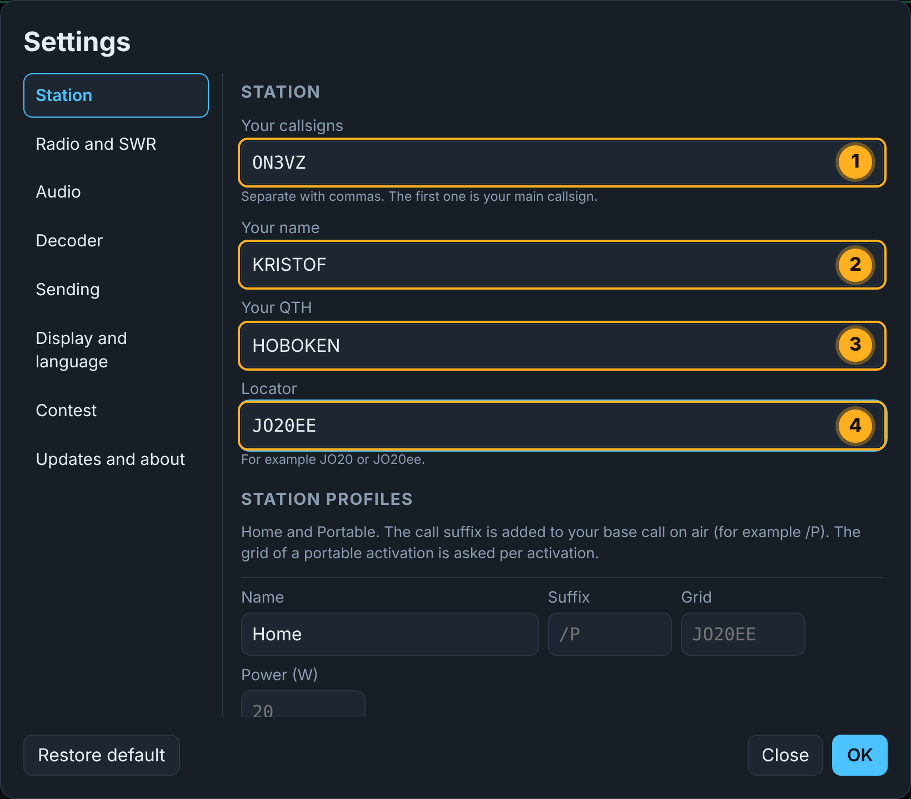
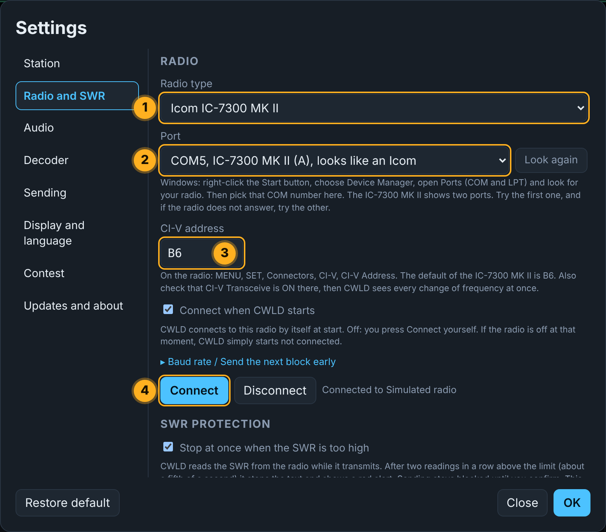
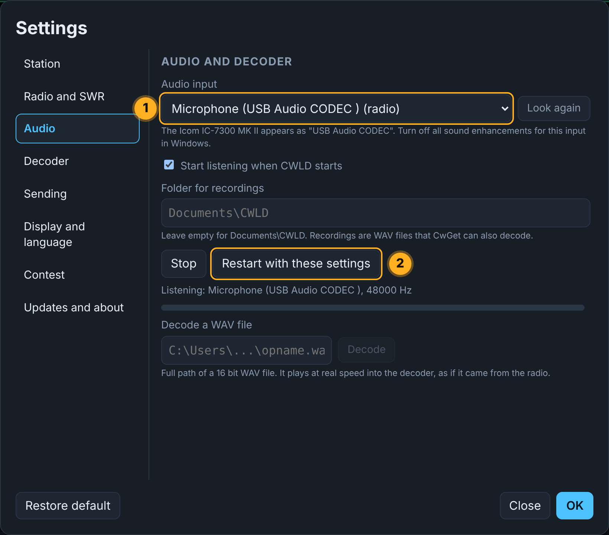

1Install CWLD
Download the installer
Press the button below. The file ends in -setup.exe. Your browser may ask whether to keep it: choose Keep.
Start it and get past SmartScreen
Double-click the downloaded file. Windows may show a blue window, because CWLD is not code signed yet. Your computer is not in danger: the program is open source and every release is built on GitHub.
- Click More info (1).
- A button Run anyway appears (2). Click it.
Finish the installer
Click Next, keep the suggested folder, click Install and then Finish. CWLD starts.
2Connect the IC-7300 MK II
Do these steps in order. It takes about ten minutes the first time.
Plug in the USB-C cable
Connect the USB-C port of the radio (1) to a USB port of your PC (2) with a cable that carries data. Switch the radio on.
Turn CI-V Transceive on, in the radio
This makes the radio tell CWLD by itself when you turn the knob or change band, so the frequency on the screen follows live.
- Press MENU (1).
- Open SET (2).
- Open Connectors (3).
- Open CI-V (4).
- Set CI-V Transceive to ON (5). Leave CI-V Address at its default,
B6.
Find the COM port in Windows
- Right-click the Start button and choose Device Manager.
- Click the small arrow next to Ports (COM & LPT).
- You see two ports for the radio. Remember the number of Serial Port A (CI-V) (1), for example COM5.
Fill in your station in CWLD
Click the gear icon at the top right of CWLD to open Settings, then the Station tab. Enter your own callsign. Grid and power are optional for now.

Connect the radio
Open the Radio tab.
- Choose the Radio type (1): IC-7300 MK II.
- Choose the Port (2) from step 3.
- Check that the CI-V address (3) is
B6. - Click Connect (4).
Tick Connect when CWLD starts if you want this to happen by itself next time.

Choose the audio
Open the Audio tab. Choose USB Audio CODEC as audio input (1), then click Restart with these settings (2).

Allow CWLD to use the microphone input
For Windows the radio sound counts as a microphone. If you see no waterfall, check this:
- Click Start, type microphone privacy and press Enter.
- Switch on the three toggles shown below.
- Also open the sound settings of Windows and turn audio enhancements off for the USB Audio CODEC.
3Connect the QMX
The QMX also uses one USB-C cable. It shows up in Windows as a virtual COM port.
Plug in and find the port
Connect the QMX and find its COM port in Device Manager as in step 3 above.
Make the sidetone loud enough
CWLD listens to the sidetone of the QMX. In the menu of the QMX open Audio, set Sidetone volume high (1), for example 99, and Sidetone abs/rel to Relative (2).
Connect in CWLD
Do the same as for the IC-7300 MK II: Settings, Radio, choose the QMX as radio type, the port, then Connect. Then choose the audio input of the QMX in the Audio tab and restart.
4Check that it works
You are done when you see this
- The status bar says the radio is connected.
- You turn the knob on the radio and the frequency on the screen follows at once.
- The waterfall moves and you see a signal when a CW station is on.
- In LISTEN mode the decoded text appears in the conversation.

5If something is wrong
CWLD does not find the radio
Check that the radio is on and the cable carries data. Open Device Manager (right-click Start) and look under Ports (COM & LPT). Choose the first port in CWLD, and if there is no answer, the second one. Check that the CI-V address is B6.
The frequency on the screen does not follow the radio
Switch CI-V Transceive on in the radio: MENU, SET, Connectors, CI-V. CWLD also asks the radio for the frequency now and then, but Transceive makes it instant.
The waterfall is empty and nothing is decoded
In Settings, Audio, choose USB Audio CODEC and click Restart with these settings. Then check the three microphone privacy switches of Windows and turn audio enhancements off. Make sure the radio has a CW signal in its filter and that the AF level is not zero.
Windows or my antivirus blocks the installer
CWLD is not code signed yet, so Windows is careful. Click More info, then Run anyway. If an antivirus removes the file, compare its SHA-256 checksum with the one on the download section and allow the file.
More answers are on the Help page.